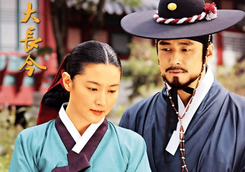
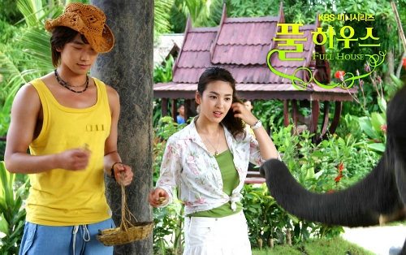
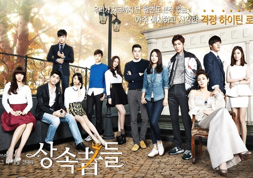
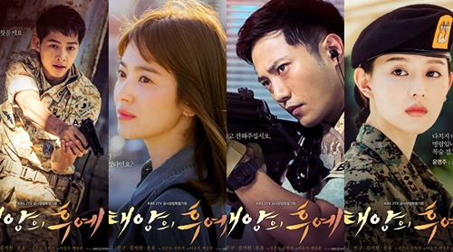
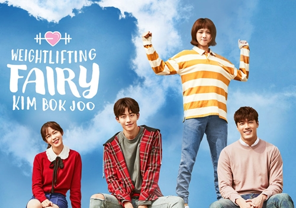

8 phim truyền hình Hàn Quốc được fan quốc tế xem nhiều nhất
"Nàng Dae Jang Geum", "Ngôi nhà hạnh phúc", "Vườn sao băng" hay "Khu vườn bí mật"... được lòng người hâm mộ thế giới suốt 15 năm qua.
Dựa trên lượt tìm kiếm phim trên mạng, lượt xem trên các trang phim quốc tế và mức độ tương tác của người hâm mộ, Koreaboo - trang thông tin giải trí Hàn Quốc bản tiếng Anh - vừa tổng hợp 15 phim được xem nhiều nhất suốt 15 năm qua. 1. Nàng Dae Jang Geum (2003)

"Nàng Dae Jang Geum" (Jewel in the Palace) - một trong những series kinh điển có lượt xem cao nhất lịch sử truyền hình Hàn Quốc - được phát sóng ở hơn 90 quốc gia. Phim kể về Seo Jang Geum - từ đứa trẻ mồ côi, vượt qua nhiều khó khăn, đố kỵ để được làm việc trong nhà bếp hoàng cung, sau đó trở thành nữ ngự y hoàng gia đầu tiên của triều đại Joseon. Nhờ thông minh, khéo léo, Jang Geum kết hợp giữa các món ăn và vị thuốc, đem tinh hoa ẩm thực vận dụng vào y học. Cô là người phụ nữ đầu tiên được phong tước Dae, trở thành Dae Jang Geum lừng lẫy trong lịch sử. Vai diễn giúp Lee Young Ae trở thành "Bảo bối xứ Hàn".
Trích "Nàng Dae Jang Geum"
2. Ngôi nhà hạnh phúc (2004)

"Ngôi nhà hạnh phúc" (Full House) có sự góp mặt của Bi Rain và Song Hye Kyo, mở đầu trào lưu phim tình cảm hài Hàn Quốc. Song Hye Kyo đảm nhận vai Han Ji Eun - cô gái hồn nhiên, lém lỉnh, luôn lạc quan trong mọi hoàn cảnh. Cuộc đụng độ với diễn viên điển trai, giàu có Lee Young Jae (Bi Rain đóng) đã thay đổi cuộc đời cô. Từ oan gia, họ phải lòng nhau lúc nào không hay. Tác phẩm từng được Philippines, Việt Nam, Thái Lan, Campuchia, Trung Quốc và Thổ Nhĩ Kỳ mua bản quyền làm lại, nhưng giới chuyên môn đánh giá không bằng bản chính.
Trích "Ngôi nhà hạnh phúc"
3. Vườn sao băng (2009)
 "Vườn sao băng" ("Boys Over Flowers") được làm lại từ tác phẩm cùng tên ăn khách của Đài Loan. Công chiếu năm 2009 trên sóng KBS, series kể về tình bạn và tình yêu của một nữ sinh nghèo với bốn chàng công tử cá tính tại trường trung học danh tiếng. Tác phẩm đưa tên tuổi của Lee Min Ho, Goo Hye Sun, Kim Hyun Joong, Kim Bum... vươn ra khỏi biên giới Hàn Quốc.
Sau chín năm, cuộc đời dàn sao có nhiều đổi khác: Lee Min Ho được nhiều thiếu nữ châu Á mến mộ, Goo Hye Sun hạnh phúc bên chồng trẻ, còn Kim Hyun Joong bị tẩy chay vì bê bối tình cảm.
Nhạc phim "Vườn sao băng"
"Vườn sao băng" ("Boys Over Flowers") được làm lại từ tác phẩm cùng tên ăn khách của Đài Loan. Công chiếu năm 2009 trên sóng KBS, series kể về tình bạn và tình yêu của một nữ sinh nghèo với bốn chàng công tử cá tính tại trường trung học danh tiếng. Tác phẩm đưa tên tuổi của Lee Min Ho, Goo Hye Sun, Kim Hyun Joong, Kim Bum... vươn ra khỏi biên giới Hàn Quốc.
Sau chín năm, cuộc đời dàn sao có nhiều đổi khác: Lee Min Ho được nhiều thiếu nữ châu Á mến mộ, Goo Hye Sun hạnh phúc bên chồng trẻ, còn Kim Hyun Joong bị tẩy chay vì bê bối tình cảm.
Nhạc phim "Vườn sao băng"
 "Khu vườn bí mật" (Secret Garden) thuộc thể loại hài lãng mạn, phát sóng trên SBS. Ha Ji Won thủ vai diễn viên chuyên đóng thế cảnh hành động - Gil Ra Im. Hyun Bin hóa thân thành Kim Joo Won - giám đốc tài phiệt đời thứ hai Hàn Quốc. Vì yêu Gil Ra Im, Kim Joo Won bất chấp tất cả để theo đuổi cô. Do uống phải thứ nước lạ trong một khu rừng bí ẩn, cả hai bỗng hoán đổi thân xác cho nhau, gây nên những tình huống dở khóc, dở cười.
Hyun Bin và đàn chị hơn bốn tuổi - Ha Ji Won - được khen diễn xuất ăn ý và nhận được nhiều giải thưởng trong các lễ trao giải cuối năm 2010.
<
Trích 'Khu vườn bí mật"
"Khu vườn bí mật" (Secret Garden) thuộc thể loại hài lãng mạn, phát sóng trên SBS. Ha Ji Won thủ vai diễn viên chuyên đóng thế cảnh hành động - Gil Ra Im. Hyun Bin hóa thân thành Kim Joo Won - giám đốc tài phiệt đời thứ hai Hàn Quốc. Vì yêu Gil Ra Im, Kim Joo Won bất chấp tất cả để theo đuổi cô. Do uống phải thứ nước lạ trong một khu rừng bí ẩn, cả hai bỗng hoán đổi thân xác cho nhau, gây nên những tình huống dở khóc, dở cười.
Hyun Bin và đàn chị hơn bốn tuổi - Ha Ji Won - được khen diễn xuất ăn ý và nhận được nhiều giải thưởng trong các lễ trao giải cuối năm 2010.
<
Trích 'Khu vườn bí mật"

Người thừa kế (The Heirs) là dự án ăn khách của đài SBS, kể về tình yêu, tình bạn và cuộc sống của những thiếu gia, tiểu thư nắm quyền thừa kế của gia tộc. Lee Min Ho và Park Shin Hye vào vai đôi học sinh trung học, cảm mến nhau nhưng bị chia tách vì khoảng cách giàu nghèo. Vượt qua sự cấm cản của bố, Kim Tan quyết theo đuổi tình yêu với "cô bé lọ lem" Cha Eun Sang.
Theo Daum, nội dung phim không mới, mô-típ bị giới chuyên môn đánh giá "đi vào lối mòn". Tuy nhiên, tác phẩm vẫn gây bão châu Á vì quy tụ dàn ca sĩ, diễn viên thần tượng hot nhất bấy giờ như: Kim Woo Bin, Kim Ji Won, Krystal, Kang Min Hyuk, Park Hyung Sik, Kang Ha Neul, Choi Jin Hyuk...
Phim "Người thừa kế"
6. Vì sao đưa anh tới (2014)
 "Vì sao đưa anh tới" (My love from the star) kể về chuyện tình lãng mạn của diễn viên lắm chiêu Chun Song Yi và chàng trai ngoài hành tinh - Do Min Joon. Phim mang màu sắc siêu thực, có sự góp mặt của dàn diễn viên đẹp và nổi tiếng như Jeon Ji Hyun, Kim Soo Hyun, Park Hae Jin, Yoo In Na... Tác phẩm cũng đánh dấu sự trở lại màn ảnh nhỏ của Jeon Ji Hyun sau 14 năm vắng bóng.
Phim "Vì sao đưa anh tới"
"Vì sao đưa anh tới" (My love from the star) kể về chuyện tình lãng mạn của diễn viên lắm chiêu Chun Song Yi và chàng trai ngoài hành tinh - Do Min Joon. Phim mang màu sắc siêu thực, có sự góp mặt của dàn diễn viên đẹp và nổi tiếng như Jeon Ji Hyun, Kim Soo Hyun, Park Hae Jin, Yoo In Na... Tác phẩm cũng đánh dấu sự trở lại màn ảnh nhỏ của Jeon Ji Hyun sau 14 năm vắng bóng.
Phim "Vì sao đưa anh tới"

"Hậu duệ mặt trời" (Descendants of the Sun) gây bão khắp Hàn Quốc và nhiều nước châu Á nhờ đề tài mới mẻ, đậm chất nhân văn. Dự án lấy bối cảnh nơi sa trường ở một quốc gia hư cấu. Chuyện tình giữa đại úy Yoo Shi Jin và nữ bác sĩ chiến trường Kang Mo Yeon thu hút người xem ngay từ những tập đầu tiên. Tác phẩm đem lại cho cặp diễn viên chính nhiều giải thưởng danh giá, đồng thời se duyên cho Song Hye Kyo và Song Joong Ki. Cặp sao kết hôn hồi cuối tháng 10/2017.
Trích "Hậu duệ mặt trời"
8. Cô nàng cử tạ Kim Bok Joo (2016)
"Cô nàng cử tạ Kim Bok Joo" (Weightlifting fairy Kim Bok Joo) thuộc thể loại tình cảm, hài hước, lấy cảm hứng từ nữ vận động viên đạt HCV Olympic - Jang Mi Ran.

Nội dung phim xoay quanh chuyện tình thú vị giữa đôi oan gia kiêm bạn học cũ - cô nàng cử tạ Kim Bok Joo (Lee Sung Kyung đóng) và chàng vận động viên bơi lội Jung Joon Hyung (Nam Joo Hyuk). Thay vì xây dựng cặp nam nữ chính với hình tượng hoàn hảo, phim đem đến tiếng cười cho khán giả bởi hai nhân vật trung tâm luôn hành động khác người, thậm chí có phần điên rồ như biên kịch phim nhận định. Đôi diễn viên chính hẹn hò sau khi phim đóng máy nhưng nhanh chóng chia tay vì không có thời gian dành cho nhau.
Nam Joo Hyuk - Lee Sung Kyung trong "Cô nàng cử tạ Kim Bok Joo"
Nguồn: Thanh Cao - Vnexpress